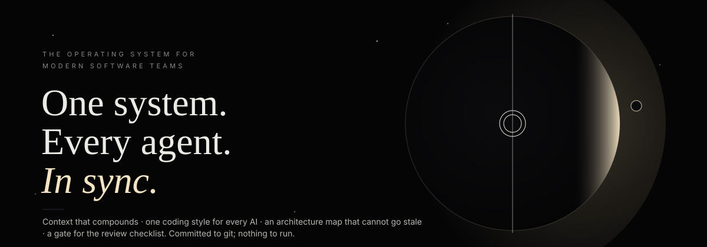
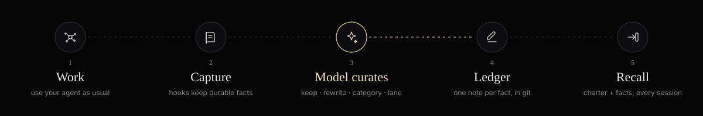

s
sThe minimal operating layer for a team building software with AI.
One committed folder · zero dependencies · git is the database
Problems · Roles · How it works · Features · Agents · Get started · Honest assessment

cosmos brings your people, agents and context together: context that compounds, one coding style for every AI, an architecture map that cannot go stale, and a gate for the review checklist. Committed to git; nothing to run.
# first person on the repo · once
pip install cosmos-dev
cosmos init
# everyone after that
git clone <repo> && claudeLedger Context that compounds |
Charter One style for every AI |
Atlas Your living product map |
Lanes Focus and avoid overlap |
Horizon See a feature before it lands |
Gate The checklist, kept by the machine |
Flares QA that follows the code |
Dreams From activity to direction |
Verdicts The human gate |
The problems
Eight things every team building with AI says out loud, three months into a real project. Each one is a symptom of the same cause: knowledge, rules and structure live in individual sessions instead of in the repository.
| “Everyone rescans the codebase.” Ledger · What one person's AI learns is captured, checked and handed to the next person's session before they ask. | |
| “Everyone tells the AI a different coding style.” Charter · One working agreement, committed and changed in pull requests, injected into every AI session on every machine. | |
| “People work across overlapping features.” Lanes · Facts, findings and diagrams are filed by feature lane; two people active in one lane this month is shown before it becomes a merge conflict. | |
| “Everyone has different strengths and thinking.” Charter + Ledger · Strengths become team property: the person who knows Redis writes the constraint once; every AI inherits it. Thinking stays personal, decisions get a recorded reason. | |
| “Product keeps dumping features; the app gets confusing.” Horizon · A feature enters with its lanes, the decisions it collides with, the open findings in the way and the people already there, before code is written. | |
| “No architecture diagram. If there is one, it is out of date.” Atlas · Diagrams generated from the repository itself (manifests, compose, Kubernetes, Terraform, OpenAPI) and drift-checked every time those files change. | |
| “Memory is one flat list, not organised by feature.” Lanes · The ledger, the index and CLAUDE.md are grouped by lane, the way the team actually talks about the product. | |
| “Every call: did you self-review, point precisely, run the tests?” Gate · A hook holds the AI's turn until the tests for touched files ran, each change cites file:line, open findings on those files are addressed, and the diff is reviewed against the Charter. |
For your role
The same folder, read from five seats.
| the complaint | what changes | |
|---|---|---|
| Product manager | “I keep adding features and the app gets more confusing. Nobody tells me what a feature collides with until it is half built.” | Horizon answers before a line is written: lanes touched, decisions it collides with, open findings in the way, who owns the area. The Atlas shows the real shape of the product, always current. |
| Project manager | “Three people ended up in the same feature. Every call repeats the same three asks. I cannot see who knows what.” | Lanes show who is active where and flag overlap this month. The Gate asks the three questions so the call does not have to. Dreams and Verdicts give a weekly rhythm: consolidate, decide, commit. |
| Developer | “I re-learn the codebase every session. My AI writes in a different style from my teammate's. I did not know that constraint existed.” | The Ledger hands over what others learned, matched to the files you touch. The Charter makes every AI write the same way. remember: keeps what you found in ten seconds. |
| QA | “My findings live in a document nobody reopens. Fixed bugs come back. Nobody tells me when a finding is picked up.” | Flares have a lifecycle and a board. A fixed bug reported again is flagged regressed. An open finding on a file the AI edits is raised at the Gate. Cards go to Slack once, with reactions to claim or close. |
| Tech lead | “There is no diagram, or it is a month old. Decisions live in people's heads.” | The Atlas is generated from the repo and drift-checked. Every decision in the Ledger carries its reason, evidence and date; contradictions surface instead of silently coexisting. |
How it works
Five steps. The developer does only the first. The gold step is where the model curates; a person decides only what evidence cannot settle.

| step | what happens | |
|---|---|---|
| 1 | Work | Use your agent as usual. The Charter, top facts and Atlas status are already in context. |
| 2 | Capture | Hooks read the session and keep only durable facts. Secrets are removed. Transcripts are never stored. |
| 3 | Dream | The model curates every new observation (keep · rewrite · category · lane). Duplicates merge, contradictions are flagged, facts are filed by lane, the Atlas is drift-checked. A human settles what evidence cannot. |
| 4 | Ledger | One markdown note per fact, with evidence. Committed. Opens as an Obsidian vault. |
| 5 | Gate & recall | Each prompt gets the facts that matter for its files; each turn that edits code is held until it meets the checklist. |
Git is the database. No server, no account, no cloud. Everything travels with the code, merges like code, and is reviewed in pull requests like code. Remove the hooks with one command and nothing else changes.
Every feature, explained
What it is, what you do, what you get, and the command. Nothing here needs a server or an account.
<img src="assets/icon-ledger.svg" width="28" alt=""> Ledger · what the team knows
| what | One markdown note per fact the team has learned (architecture, decisions and their reasons, conventions, constraints, bug root causes, dependency limits, workflows, domain rules), each with the files that prove it, the dates it was seen, how many times, and by whom. |
| you do | Nothing. Work in your AI tool; facts are captured when a turn ends. Type remember: … when something must be kept for sure. |
| you get | Your next session, and every teammate's, starts knowing what the last one learned. Ask cosmos why redis to see the evidence for anything. |
| command | cosmos capture · cosmos why · cosmos search · cosmos remember |
<img src="assets/icon-charter.svg" width="28" alt=""> Charter · one style for every AI
| what | A short file, .cosmos/charter.md: how we write code, how we test, how we point at things, how we review our own work, our architecture rules. Owned by the team, changed in pull requests. |
| you do | Agree it once. Add a rule when a decision is made, from the UI, the CLI, or by typing remember: in a session. |
| you get | Every AI session on every machine reads it first. Personal preferences stop leaking into the codebase. Explicit rules outrank anything the AI inferred. |
| command | cosmos charter · cosmos charter add "…" · cosmos charter edit |
<img src="assets/icon-atlas.svg" width="28" alt=""> Atlas · architecture that stays true
| what | Inventory, container, deployment and API diagrams generated from what the repository already declares: package manifests, docker-compose, Kubernetes, Terraform, OpenAPI, .env.example, README. Every source file is fingerprinted. |
| you do | Run cosmos atlas once; type /atlas in Claude Code for the deeper pass (data flows, dependency index). |
| you get | A diagram that cannot quietly go stale: when compose or manifests change and the picture does not, everyone is told at the start of their session and on the Atlas page. |
| command | cosmos atlas · cosmos atlas --check · /atlas |
<img src="assets/icon-lanes.svg" width="28" alt=""> Lanes · memory by feature
| what | Every fact, finding and diagram is filed under the feature or module it belongs to: proposed by the model, refined from the files it points at, or configured by you. |
| you do | Optionally name your lanes in config.json, or let cosmos lanes --propose --write do it. Otherwise nothing. |
| you get | A ledger organised the way the team talks about the product; per lane, who has been active in the last 30 days and where two people overlap, before it becomes a merge conflict. |
| command | cosmos lanes · cosmos lanes --propose --write |
<img src="assets/icon-horizon.svg" width="28" alt=""> Horizon · features arrive with a map
| what | A one-sentence feature request turned into an impact note: lanes touched, recorded decisions it collides with, open findings in the way, people who have been working there, a suggested owner. Takes files, folders and attachments for context. |
| you do | cosmos horizon "bulk invite with partial success" -f src/invites, or type it on the Horizon page and drop files in. |
| you get | The conversation about a feature happens before the code, with facts. The note is saved next to the code the feature will change and travels with the pull request. |
| command | cosmos horizon "…" [-f file-or-folder] [--attach file] [--brief file] |
<img src="assets/icon-gate.svg" width="28" alt=""> Gate · the review checklist, applied by the machine
| what | A check that runs when the AI says it is done. If the turn changed code but ran no tests, gave no file:line references, or ignored an open finding on a file it touched, the AI is handed the exact list and keeps going. |
| you do | Nothing. Tune the rules in the Charter if you want. |
| you get | “Did you test? Point precisely. Review your own change.” stops being something a person says on every call. A turn is held at most once; documentation edits are never held. |
| command | cosmos gate · cosmos gate --transcript FILE |
<img src="assets/icon-flares.svg" width="28" alt=""> Flares · QA that follows the code
| what | Audit findings as memory with a lifecycle: open → claimed → PR open → fixed, or needs a human, won't fix, withdrawn. A fixed bug reported again is flagged regressed. | |||||
| you do | Import the audit JSON or type flare: … in a session. Move cards on the board or with one command. | |||||
| you get | Flares show up when someone touches the affected file. Slack cards post once, with reactions to claim or close. A report can be regenerated any time. | |||||
| command | `cosmos flares import\ | list\ | fix\ | withdraw\ | slack\ | report` |
<img src="assets/icon-dream.svg" width="28" alt=""> Dream & Verdicts · keeping it true
| what | The model reads every new observation and decides what is worth keeping, rewrites it crisply, names its category and its feature lane. Then duplicates merge, contradictions are flagged, old facts are marked for review, the Atlas is drift-checked. Anything evidence cannot settle waits for a person on the Verdicts page. |
| you do | Run a dream now and then (or nightly in CI), glance at Verdicts, commit. |
| you get | A ledger that stays small and right. Every human decision (keep, both valid, still true, forget) is recorded with who and when. |
| command | cosmos dream · cosmos review · the Verdicts page |
Also in the box
| Control room | cosmos ui: overview, ledger, lanes, atlas, charter, horizon, flares, dreams, verdicts, activity, docs. Localhost only; picks a free port. |
| The model | Uses your existing Claude Code login by default (claude -p), or ANTHROPIC_API_KEY, or any OpenAI-compatible endpoint. COSMOS_LLM_PROVIDER=none runs heuristics only, and says so. |
| Privacy first | API keys, tokens, passwords, private keys and credentials in URLs are redacted before anything is written. Sensitive folders can be excluded. Transcripts are read, never stored. |
| Never in the way | Hooks finish in milliseconds and exit clean. The Gate is the one deliberate hold, and it explains itself. |
Every agent · one point of contact
Claude Code, Codex, Gemini, Cursor, Copilot, Cline, Cowork: one store. Teams do not use one AI tool. cosmos meets each of them three ways, and everything lives in the repository, so sharing it is a git push.
They read the same rules The Charter and the key facts are written to every tool's own instruction file, kept in sync automatically. CLAUDE.md — Claude Code, CoworkAGENTS.md — Codex, Cursor, Copilot CLI, GeminiGEMINI.md, .cursor/rules/, .github/copilot-instructions.md, .clinerules, .windsurfrules |
They call the same tools cosmos mcp is a Model Context Protocol server every one of these agents can connect to. One command writes the configs.cosmos_recall — facts and findings for the files you are about to touchcosmos_remember, cosmos_flare — write back from any toolcosmos_charter, cosmos_atlas, cosmos_lanes, cosmos_horizon, cosmos_why |
They feed the same memory Claude Code captures through hooks. Codex sessions are read from its own logs (exact format). Gemini and Antigravity best-effort. Anything else writes through MCP. cosmos connect allcosmos capture --agent allgit push — every teammate on every tool has it |
Claude Code · Cowork · Codex CLI · Codex Desktop · Gemini CLI · Antigravity · Cursor · GitHub Copilot · Cline · Windsurf · Obsidian
Getting started
One person does steps 1 to 3 once. Everyone else does step 4. Step 5 is whenever someone feels like it, or a nightly job. The same steps are in the console under Docs.
1 · Set up the repository. Creates .cosmos/ with the Charter, an empty Ledger, the first Atlas and the /atlas prompt; wires hooks, MCP config and the instruction files every agent reads.
pip install cosmos-dev
cd <your-repo>
cosmos init
cosmos connect all # MCP + instruction files for every agent2 · Seed it from what already exists. Read the sessions the team already had (Claude Code, Codex, Gemini), import audit findings if there are any, consolidate, review.
cosmos capture --agent all
cosmos flares import <findings.json> --prefix <ID-PREFIX> # optional
cosmos dream && cosmos review3 · Agree the Charter, then commit. Edit .cosmos/charter.md in a pull request; that is the team agreeing on one style. Commit and the memory becomes the team's.
cosmos charter edit
git add .cosmos .claude/settings.json .claude/commands .mcp.json CLAUDE.md AGENTS.md GEMINI.md .gitignore
git commit -m "cosmos: charter, ledger, atlas" && git push4 · Everyone else clones and opens their agent. No install, no setup. Claude Code, Codex, Cursor, Gemini CLI, Copilot, Cline or Cowork all read the same Charter, facts and tools; a committed wrapper runs cosmos from the repository. Sessions that were already open pick the hooks up after a restart.
git clone <repo> && cd <repo>
# open your agent: claude · codex · cursor . · gemini · …5 · Keep it in order. Map features before coding, dream now and then, glance at Verdicts, rebuild the Atlas when it reports drift. Everyone gets it on their next git pull.
cosmos horizon "<feature in one sentence>"
cosmos dream && cosmos review && cosmos atlas --check
git add .cosmos .claude/settings.json .claude/commands .mcp.json CLAUDE.md AGENTS.md GEMINI.md .gitignore && git commit -m "cosmos: dream" && git pushWant a fact or rule kept for certain? Typeremember: never modify production schemas by handorflare: /transitions has no role gatein any agent, or callcosmos_rememberover MCP. Explicit rules always outrank inferred ones.
Already have a codebase?
Link an existing project and its past sessions. Most projects already have months of history: AI sessions on several machines, an audit document, branches nobody has drawn. Bring all of it into one folder. Full guide: docs/link-existing-codebase.md.
| step | command | |
|---|---|---|
| 1 | Initialise in the repository | cd <your-repo> && cosmos init && cosmos connect all |
| 2 | Link past sessions | cosmos capture --agent claude --transcript <path-to-session>.jsonl -v · cosmos capture --agent codex --transcript <path-to-rollout>.jsonl -v · cosmos capture --agent all -v |
| 3 | Bring in an existing audit | cosmos flares import <findings.json> --prefix <ID-PREFIX> --source <report-name> · cosmos flares slack --seed-state <legacy .slack-posted.json> --prefix <ID-PREFIX> --status |
| 4 | Consolidate and look | cosmos dream && cosmos review && cosmos lanes && cosmos ui |
| 5 | Architecture | cosmos atlas for the deterministic pass; /atlas in Claude Code, or paste .claude/commands/atlas.md into any agent, for the deep pass |
| 6 | Agree the Charter, commit on a branch off your base branch | cosmos charter edit · git checkout -b cosmos/init origin/<base-branch> · add .cosmos .claude/settings.json .claude/commands .mcp.json CLAUDE.md AGENTS.md GEMINI.md .gitignore · commit · git push -u origin cosmos/init |
| 7 | Restart sessions that were already open | hooks and MCP servers are read when a session starts |
| 8 | Teammates | git pull, then open your agent |
Transcripts live in ~/.claude/projects/<repo path, slashes → dashes>/ (Claude Code), ~/.codex/sessions/ (Codex), ~/.gemini/ (Gemini). They are read, never stored; secrets are redacted. .claude/settings.local.json is personal and untouched; .cosmos/state/ is gitignored.
What we learned from others
We took the ideas that need no infrastructure. Several tools solve pieces of this well. We kept every strength that works with nothing more than git and a command line, and left out what needs an engine.
| tool | its strength | in cosmos |
|---|---|---|
| Letta Context Repositories | Memory is versioned in git; conflicts are settled in pull requests. | The Ledger and Charter are markdown in the repo. Every change is a diff; contradictions go through review. |
| ai-memory | Local-first, driven by editor lifecycle hooks. | Hooks capture in milliseconds; the model does the thinking later, at dream time. |
| MemContext | Facts cite their source; the system learns from human corrections. | Every fact carries evidence files, dates and observers. Verify, keep and forget decisions are recorded as memory. |
| ZeroShot | One memory shared across Claude Code, Cursor and Copilot. | Charter and facts are written to every agent's instruction file and served over MCP. |
| ContextOps practice | A hierarchical CLAUDE.md / AGENTS.md: what, how, why. | Generated and kept current: the Charter is the how, the Ledger the why, the Atlas the what. |
| Architecture-diagram prompts | “Inventory first, then diagrams” gives good Mermaid from a repo. | Built in: cosmos atlas does the inventory deterministically; /atlas runs the deep pass; drift is detected afterwards. |
| Augment Code | Maps dependencies across 400k-file codebases. | Deliberately not taken. That needs an indexing engine. cosmos stays a few thousand lines of standard-library Python. |
Honest assessment
| Why it is a good fit | Where it falls short today |
|---|---|
| Nothing to run. No database, no server, no account, and no API key: the model is your existing Claude Code login. | Capture inside hooks is heuristic on purpose (it must finish in milliseconds); the model cleans up at dream time. Without any model available, roughly a quarter of what is kept is noise, and the dream says so. |
| Zero effort for developers after the first setup; the second person just clones. | The Atlas reads manifests and specs, not a code graph: no call chains, no dependency analysis inside the code. |
| One place for rules, facts and structure, inspectable as plain files, diffs and Obsidian notes. | The Gate checks that tests ran, not that they were the right tests or that they passed. |
| Wrong facts cannot hide: evidence and age on every one. Stale diagrams cannot hide: drift is reported. | Capture and Gate hooks exist for Claude Code only; Codex and Gemini are read from their logs; other agents write through MCP. |
| The review checklist stops being a person's job. | Memory is per repository; cross-repo recall inside the hooks does not exist yet. |
| Privacy by construction: local-first, secrets redacted, transcripts never stored. | Verdicts are trust-based; the audit trail is git history, not roles. No Jira integration. |
Why use this
The cost you pay today is invisible. Nobody files a ticket for “rediscovered the same constraint as last week”, “the AI used a different style again”, or “the diagram was wrong”. It shows up as slower onboarding, repeated mistakes, review calls that repeat themselves, and a quiet erosion of trust in the AI tools. cosmos makes the knowledge, rules and structure that already exist in your team stay put, for the price of one init.
And it is safe to try. It writes one folder and a few lines into files you already have. Remove the hooks with one command (cosmos uninstall) and nothing else changes.
Why we made this
Three months in, eight complaints, one cause. We were building a product across several repositories with Claude Code. People overlapped on features, each told the AI a different style, product added features faster than the picture could hold, there was no architecture diagram anyone trusted, and every call repeated the same asks. A QA audit produced twenty-nine findings that lived in a document nobody reopened.
The tools we looked at either wanted a hosted service or solved one slice. We wanted the minimal whole: memory, rules, structure and a gate, versioned with the code, with nothing to operate.
The killer feature is not that the AI remembers. It is that the team stops repeating itself.
Layout
.cosmos/
charter.md the team's working agreement (injected first)
ledger/ one markdown note per fact · finding/ (flares) · horizon/
atlas/ inventory + Mermaid diagrams, fingerprints
config.json lanes, LLM provider, excludes
cosmosw zero-install wrapper (runs the vendored copy)
state/ gitignored: pending observations, dream runsGuides: memory model · charter and gate · lanes and horizon · atlas · audit and findings · hooks · Obsidian · link an existing codebase
cosmos · MIT licence · Python 3.9+, standard library only · cosmos doctor checks a setup · cosmos ui opens the control room